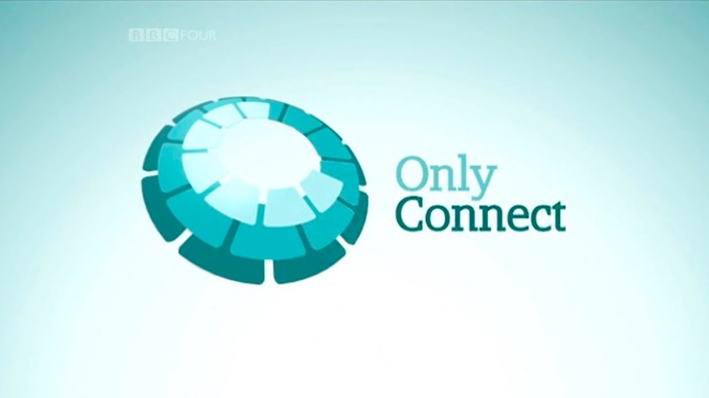
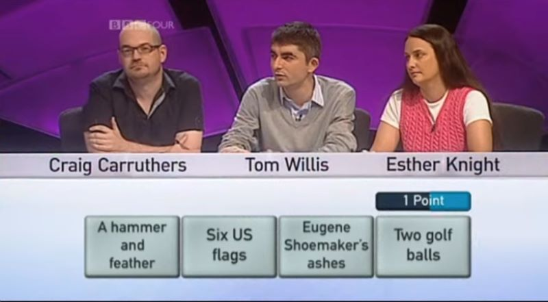
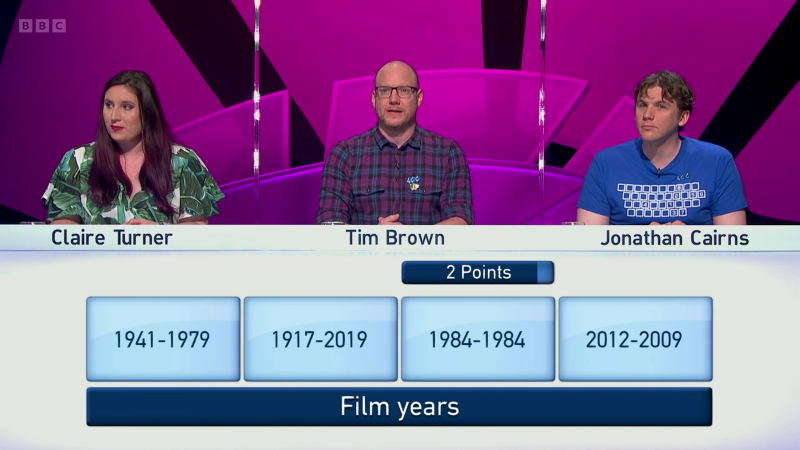
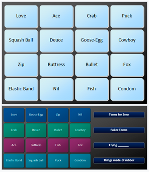
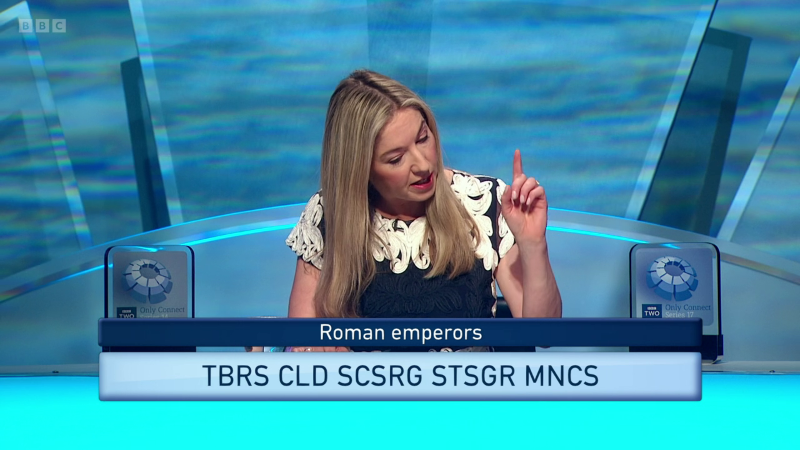

Only Connect
Le plus difficile des quiz télévisés
Le lundi soir, sur BBC2, le Royaume-Uni se passionne pour un quiz à la difficulté extrême. Son concept, tellement british, n'a pas été exporté à l'étranger. Voici comment sont préparées ses énigmes, aussi brillantes qu'improbables.

Format
Un concept redoutable et versatile.
Le principe se décline en quatre manches. La première est la plus connue — il faut relier des choses d’apparence aléatoire. Les équipes ont quarante secondes et peuvent demander quatre indices, qui évoquent de plus en plus la réponse. Voici la toute première de l’histoire de l’émission, en 2008.
Tous ces objets ont un point commun. (Capture d’écran BBC2)
Tous les recoins de la culture générale et de pop-culture peuvent être mobilisés. Et si cette dernière est nécessaire, il faut user de « pensée latérale » pour comprendre les énigmes lancées aux candidats : entre deux questions demandant des connaissances précises peut se cacher quelque chose de bien plus simple. Découvrir « Only Connect », c’est passer de stupéfaction en stupéfaction. Une fois par épisode, l’apparition de la question musicale, redoutée, fait rugir tout le monde.
Dans la deuxième manche, cette fois, il faut trouver au plus tôt le quatrième indice : il y a toujours une connexion, et les indices progressent dans une séquence qu’il faut aussi comprendre. Si le premier indice est « Chirac », vous pourrez buzzer et dire « Macron » et hop, cinq points raflés, un moment évidemment rare dans le jeu qui demande soit une connaissance très précise, soit un peu de divination. Mais vous l’aurez compris, c’est un peu plus difficile que ça. À haut niveau, ça peut sembler particulièrement cryptique.
Exemple d’une connexion astucieuse et au bon rythme. Au premier indice, on va penser à une période de temps. Puis l’on finit par comprendre que ce ne sont pas que des dates. (Capture d’écran BBC2)
Ensuite, en troisième manche les candidats doivent triompher des « murs », où ils doivent ordonner 16 indices par groupes de quatre, concept repris par le New York Times avec son jeu « Connexions ».
Tiberius Claudius Caesar Augustus Germanicus. Fastoche, non ? (Capture d’écran BBC2)
Un match se conclut sur la quatrième manche avec les « voyelles manquantes » — où tout le monde a le lien et la réponse, mais les voyelles des propositions ont été enlevées, et des espaces rajoutés un peu partout. Tout ça constitue un menu par épisode, scientifiquement composé par une trentaine d’auteurs, qui grimpe en difficulté toute la saison. En ce sens, les questions des demi-finales et finales sont aussi brillantes qu’improbables.
Particularités
Ce jeu se démarque par plusieurs aspects : sa très grande difficulté, qui croît sept mois durant dans un tournoi où 16 équipes de trois personnes s’éliminent les unes les autres. À la clé : zéro centime, un trophée et un titre prestigieux dans le monde du trivia britannique (autre nom des quiz). Sa présentatrice, Victoria Coren-Mitchell, joueuse de poker pro et autrice, est le cœur et l’âme de ce format souvent drôle : sarcastique et pince-sans-rire avec les candidats — des têtes qui, généralement, ont rêvé d’être là. On les présente avec une anecdote improbable : je suis Benjamin Benoit, et une morsure de coati m’a valu quelques visites d’infirmeries de cambrousse au Brésil. « On y trouve une certaine bizarrerie, mais elle est assumée », résume Jonathan Cairns, champion du jeu avec les Data Wizards.
Le programme est religieusement regardé par deux à trois millions de Britanniques le lundi soir, une audience qui bat régulièrement « Eastenders », le soap national.
Jadis, on choisissait les questions derrière une lettre grecque. Un spectateur a trouvé ça « trop snob ». La saison suivante, ils sont passés aux hiéroglyphes.
Verra-t-on un jour « Only Connect » en France ? Très peu probable, et même hors du Royaume-Uni. Ce jeu est l’incarnation d’une culture du quiz bien britannique. Le matin, les jeux ressemblent aux nôtres — mais le lundi soir, c’est le « Quizzy Monday » sur BBC2 — où « Only Connect » (à 20 heures) est entouré de « Mastermind » (19 h 30), émission de quiz à grand gravitas — les questions sont posées et reçues avec un sérieux extrême, le concept étant inspiré des interrogatoires de la Gestapo — et du vénérable « University Challenge » (20 h 30). « Un créneau où la BBC remplit sa mission d’être divertissante et éducative », analyse Selina Conroy, de l’équipe des Après-Skiers. « Le Royaume-Uni est l’un des rares marchés où l’on quizze sans prix, juste pour la fierté, la gloire et le plaisir », abonde Jack Waley-Cohen.
C’est une forme de sérialité différente de nos jeux « à champions » — ici, l’écriture a la même importance que les candidats. Et si tous les candidats contactés ont parfois participé à de nombreuses émissions, ils reviennent à celle où on ne gagne rien. « “Only Connect” m’inspire dans la diversité des indices contenus dans les questions, combinant l’intellectuel et la culture pop », résume Frank Paul. Et, bien sûr, une poignée de questions impénétrables pour nous, généralement sur le snooker (variante du billard).
Exemples
Manche 1 - Les connexions :
Les équipes doivent identifier quatre éléments liés par un thème commun à partir de quatre indices. Ils peuvent prendre des indices supplémentaires, mais cela leur coûte des points.
Vidéos
Manche 1 - Les connexions :
Les équipes doivent identifier quatre éléments liés par un thème commun à partir de quatre indices. Ils peuvent prendre des indices supplémentaires, mais cela leur coûte des points.
Teams
titre
bla bla bla
Plus d'infos...
titre
bla bla bla